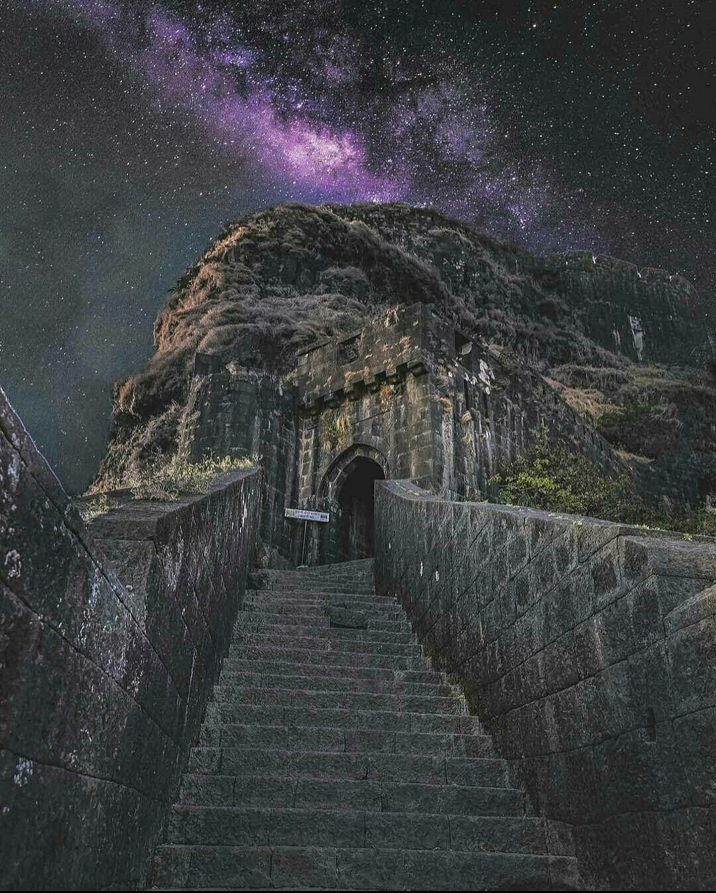
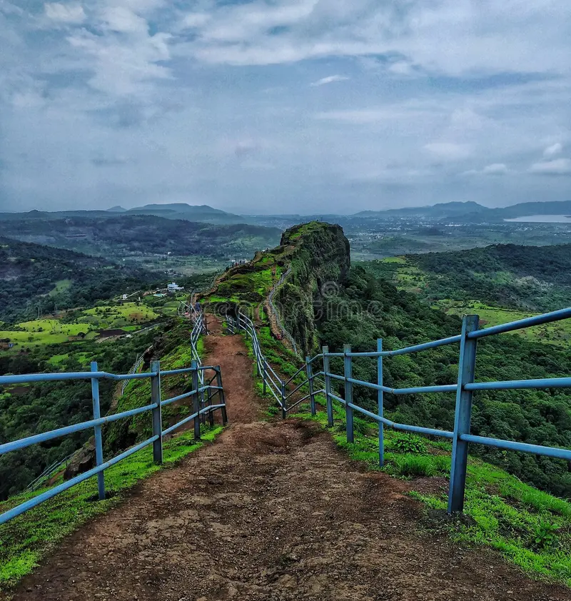
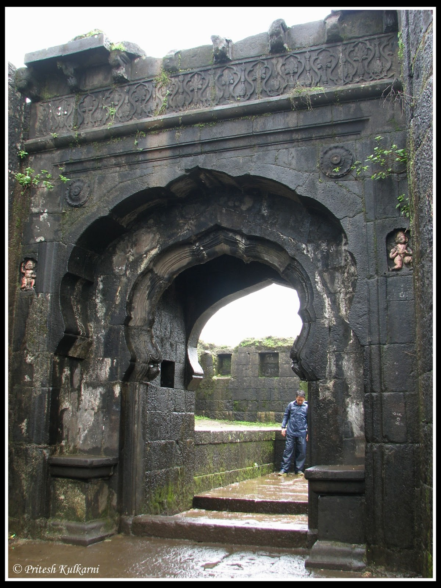

lohgad fort

Introduction
Lohagad Fort was built in the 18th century and is an ideal destination for trekking and nature lovers, especially from Pune and Mumbai. Chhatrapati Shivaji Maharaj used to keep his treasury in this fort.
ArchitectureLohgad fort history :
Lohgad fort has very ancient history with many dynasties ruled it at5 different points of time Satavahanas, Chalukyas, Rashtrakutas, Yadavas, Bahamanis, Nizams, Mughals and Marathas. Shivaji maharaj captured Lohgad fort in 1648 AD from Adilshahi sultanate but in 1665-66 Mirza Raja Jaysingh acquired 23 forts of Chhatrapati shivaji Maharaj during Treaty of Purandar the lohgad was one of the fort. Shivaji Maharaj captured it again in 1670 & he used to keep his treasury there then Aurangjeb captured it in 1700 and again Balaji Vishwanath acquired it . Bajirav II ruled the fort in 1802 until it went in the hands of british under colonel prother in 1818. Luckily the fort is still intact.

Importance Of The Fort :
This fort has immense historical significance, is an abode of archaeological beauty, and has been used by various rulers for various duties. Another importance of the past century is that the fort was among the many forts Chhatrapati Shivaji had to hand over because of the Purandar Treaty.
However, as the ruler went on a mission to recapture the forts, Lohagad came under his bastion, becoming part of his significant achievements.

About Lohagad Fort -
- Lohagad Fort is -one of the numerous hill forts in Maharashtra, India. Interestingly, this fort rises to an elevation of about 3,388 feet high and is located near the hill of Lonavala and Pune to the northwest.
-For most of the time, this fort was under the Maratha Empire and the Mughal Empire for a few years.
-Lohagad in Marathi translates to ‘Iron Fort’ The fort was initially built in the 16th century by the Maratha ruler, Chhatrapati Shivaji Maharaj, and was later captured by the Mughals in 1665. It was finally captured by the Marathas in 1756 and was used as a strategic fortification during the Peshwa rule in the 18th century.
-The fort has several prominent features, including a large gate, a small temple dedicated to Lord Shiva, and several water tanks. One of the main attractions of the fort is its well-preserved Bhaja and Karla Caves, located at the base of the fort.
-Today, the fort is a popular destination for hikers and history enthusiasts, who can enjoy the scenic views and explore the various structures and artifacts from its rich past.
What is the best time to visit Lohgad fort?
The best time to visit the fort is in Mansoon & winter. In winter try to visit early morning before son becomes hot as it will dehydrate you and you will feel exhausted. This applies to all the forts.
Who built Lohagad Fort?
The fort was built by Guru Govind Singh and it was designed to serve as a prison. However, over the years, it was used for various purposes.
Battles Were Fought At The Fort :
Chhatrapati Shivaji was the founder of the Maratha Empire, which is legendary in the history of India. Some battles were fought, resulting in handing over or recapturing the fort. Here are some of the battles fought;
> Battle of Mysore plateau
> Battle of Sinhagad
> Battle of Surat
> Battle of Poona